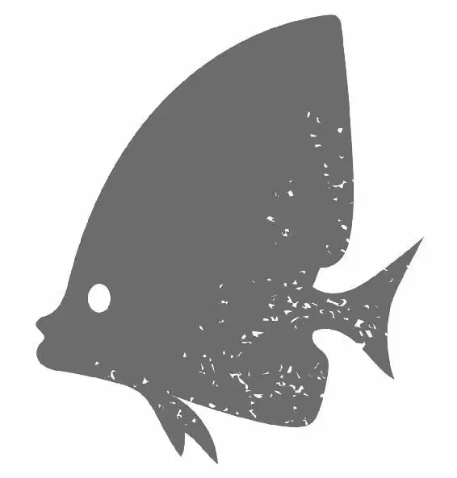

Destiny and Bailey peered across the way, ready and waiting. On the other side of the glass, tourists happily snapped pictures of them. Bailey looked out intensely, waiting for the right moment. “Okay,” he said. “When I tell you you’re gonna —”
“Yeah, I got it, okay,” said Destiny. “I’m gonna signal with a big splash.”
“Not clear yet ...,” said Bailey, keeping his eyes focused on the crowd.
Meanwhile, on the other side of the room, Dory and Hank hid in an empty stroller in the rack. From inside the sippy cup on the tray, Dory’s eyes darted left and right as she waited for the signal. Hank gobbled up some leftover goldfish crackers in the undercarriage.
“You know something?” he said. “I have no idea why you’re even doing this.”
“What do you mean?” asked Dory.
“Seems like a lot of trouble just to find some more fish. If I had short-term memory loss, I’d just swim off into the blue and forget everything,” Hank admitted.
“But I don’t want to do that. I want my family.”
“Not me, kid. I don’t want anyone to worry about. You’re lucky. No memories, no problems.”
Bailey watched from the tank as parents parked their strollers. “Still not clear ... Still not clear.”
“You don’t have to say when it’s not time,” said Destiny, irritated.
“Not —” Bailey said again.
“Just tell me when it is time!” said Destiny.
“Okay, here we go ... and ... WAIT!”
“Are you serious!”
“Okay, on the count of three,” said Bailey.
“Don’t count, just say, ‘Go —’”
“GO! NOW! NOW! Do it! Do it!” urged Bailey. Destiny leapt out of the water, making a giant splash that sent all the gawking tourists scattering and squealing with delight.
“Wow, look at that,” said Dory. She was in awe of the splash.
“That’s the signal!” shouted Hank, reminding her.
“Go, go, go! That’s the signal!” repeated Dory.
The stroller carefully rolled forward and took off, keeping pace amongst the moving crowd. Hank drove from down below using his tentacles while Dory navigated from the sippy cup.
“Now remember, Destiny said that Deep Sea Drive will take us to Open Ocean,” said Hank. “So follow the signs that say Deep Sea Drive.”
Dory repeated, “Deep Sea Drive to Open Ocean gets me to my family.”
She looked ahead and saw the sign for Deep Sea Drive pointing to the right. Blue tangs were pictured on the banners on the wall. “Go right!”
Hank turned right and kept the stroller on the side of the pathways, but he couldn’t avoid bumping into a couple of people along the way.
“Left!” yelled Dory.
“And steer clear of people, will ya?” Hank called up from the undercarriage. “Especially kids! I don’t want to be touched.”
“Shhh! Do not mess me up!” said Dory, trying to concentrate. She took her eyes of the road to respond to Hank, but when she looked back, she was headed straight toward a kid holding a bag of popcorn.
“Ahh!” she shouted.
In a last-ditch effort to avoid a crash, Dory and Hank were thrown from the stroller. Dory, still in her cup, rolled over to some parents. One of the mothers noticed the cup and began walking toward the stroller. “Oh, poor baby,” she said, picking up the cup. “Let me get that for you.”
Hank frantically looked around for somewhere to hide. His only choice was to camouflage himself as a human baby before the mother leaned in to return the cup. So he did — and just in time.
“Oh, my,” the mother muttered to herself, looking at the strange baby in the stroller. Hank was a very strange-looking baby indeed. She quickly put the cup in the hands of the “baby” and turned away. Hank drank from it in an attempt to look more baby-like.
“I used to think all babies were cute,” the mother said quietly, looking around.
Now that Hank and Dory were reunited, they continued their search. “Where do we go?” Hank begged.
“Oh. Sorry! Okay, I was looking ...,” Dory said, panicking.
★★★
Up above, Becky flew over the Institute with Marlin and Nemo in the bucket.
“Roo-roo, Becky! Drop us anywhere!” said Marlin. “We’re okay!”
“Just wait, Dad! I think she’s looking for a place to land,” said Nemo.
“She’s confused, Nemo! She doesn’t even know which way to look!”
“Squawk! Roo-roo?” said Becky, catching sight of the popcorn spilled and scattered all over the ground.
She suddenly changed course and flew toward a tree. She hung the pail that contained Nemo and Marlin on a branch, swooped down to the popcorn and began to eat.
★★★
Hank and Dory continued in the stroller, but Dory became confused when they reached an intersection. She looked around, puzzled, trying to figure out how to make the right choice.
“Which way?” nudged Hank.
Dory’s face lit up when her eyes landed on a sign that read the world’s most powerful pair of glasses! Next to the sign was an arrow pointing to the left.
“I remember that!” Dory shouted. “We need to go left!”
Unfortunately, she didn’t see the sign for Deep Sea Drive, which pointed to the right.
★★★
Marlin and Nemo were stranded inside the pail, hanging from the branch, while Becky fought other birds for kernels of popcorn.
Marlin called to her, but Becky was focused on eating as much popcorn as possible — and she was out of earshot. “We have to get closer to Becky so she can hear us,” Marlin said. He inched the pail down the branch, in an effort to close the gap between them.
“I don’t think we should move the pail,” said Nemo.
Marlin continued to inch. “Nemo, without me, Becky is lost.”
“Dad, just trust her.”
“Trust her? So she can forget us altogether?”
“I trust Becky,” said Nemo.
The pail moved further down the branch. “You trust Becky,” Marlin said incredulously. “Becky’s eating a cup!” He gestured in her direction. She had a cup over her head and was turning in circles, looking confused.
“Becky!” Marlin tried calling again. “Loo-loo!”
WHIP! Suddenly, the weight of the pail moving down the branch caused it to fling upward. It launched Marlin and Nemo out of the pail and into the sky! Screaming, they landed on an outdoor awning and tumbled into a tank of toy robot fish in the gift shop.
“Well, at least we’re not stuck in a bucket anymore,” said Marlin.
They watched through the glass of the toy tank as Becky finished eating and flew back to the pail. She grabbed it and flew to the roof of Quarantine, then peeked into the pail and squawked, confused.
“Or on top of Quarantine,” said Nemo.
Marlin sighed.
